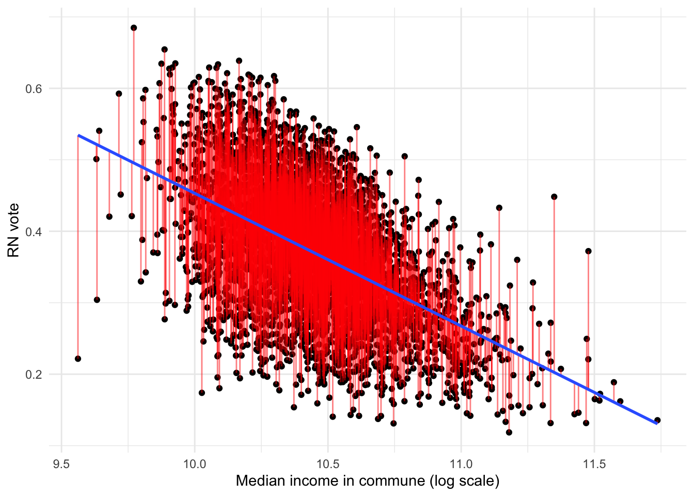
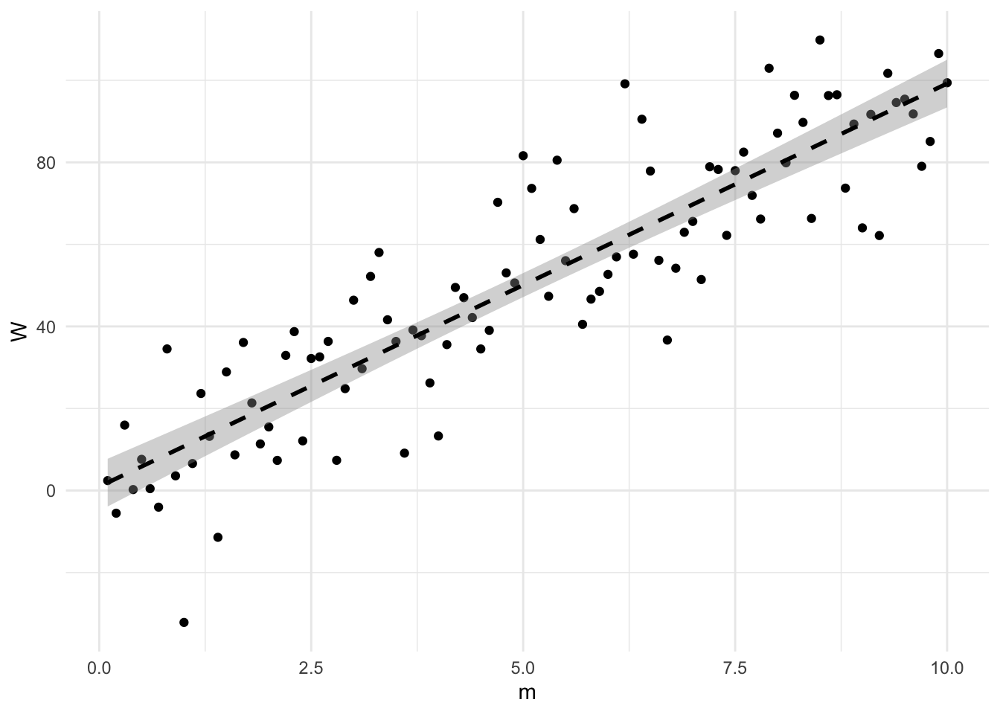
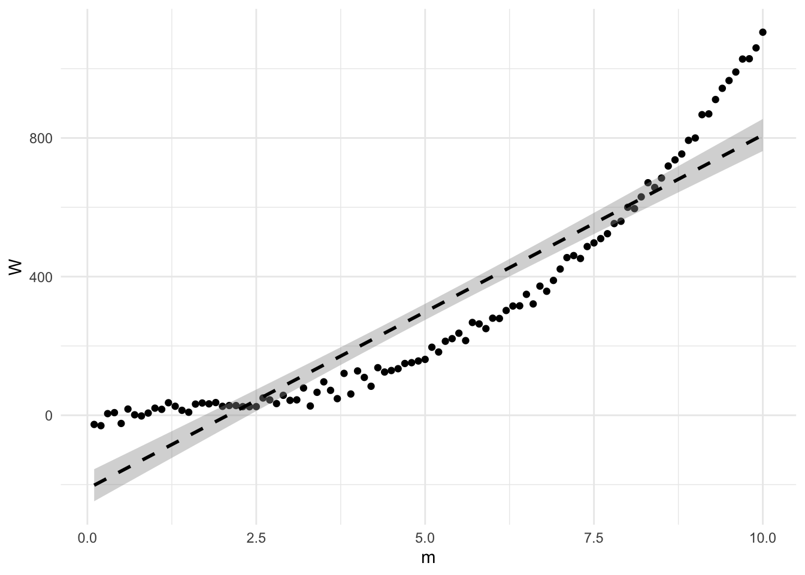
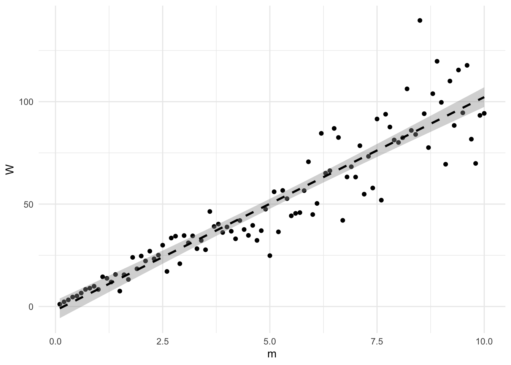
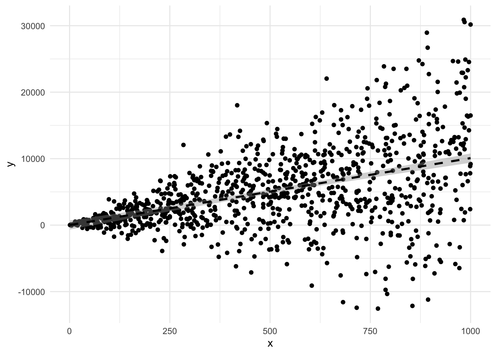
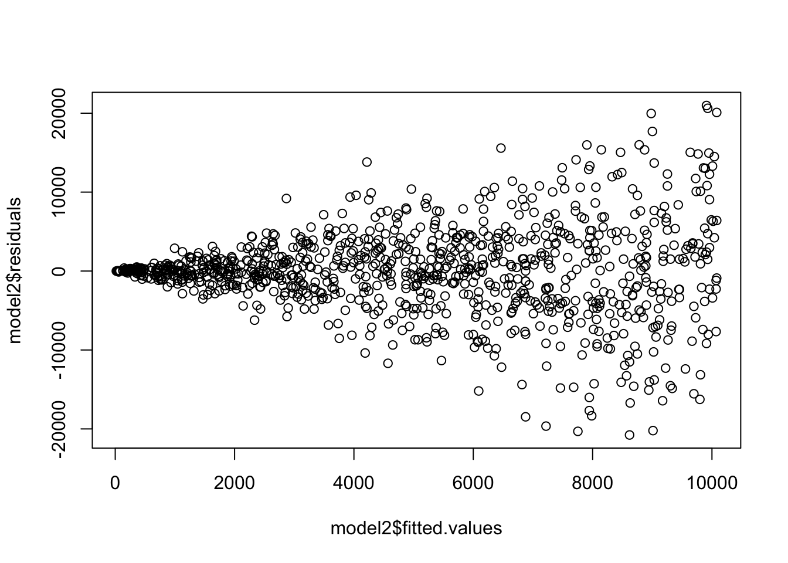
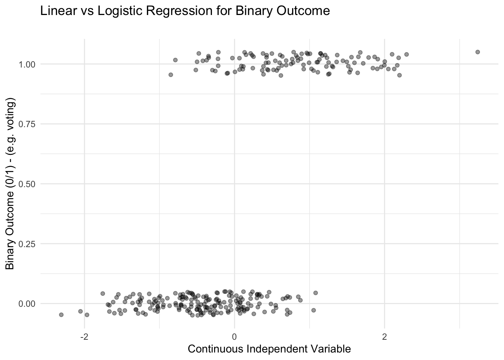
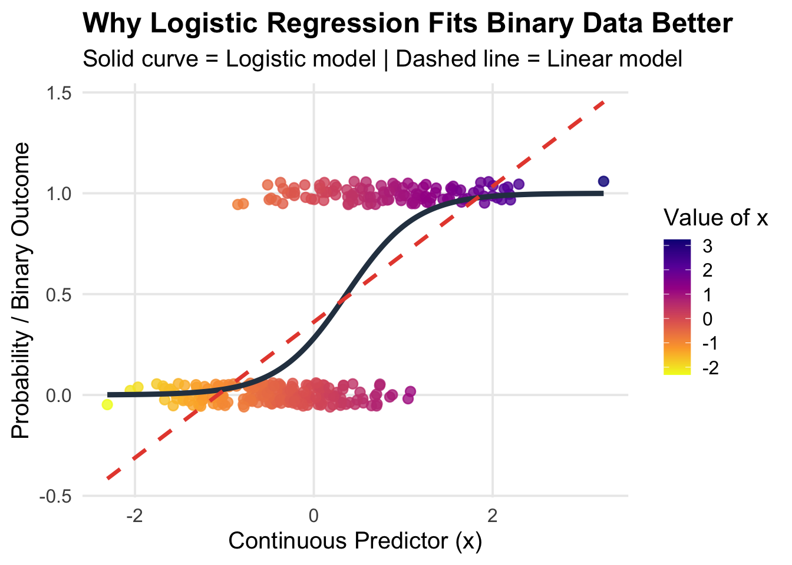
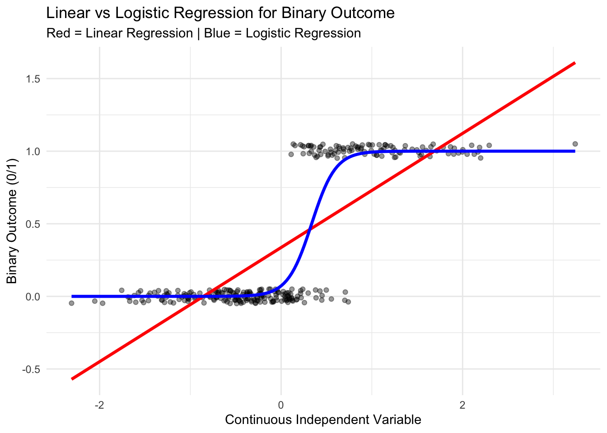

Warning: There were 2 warnings in `mutate()`.
The first warning was:
ℹ In argument: `codecommune = as.numeric(codecommune)`.
Caused by warning:
! NAs introduced by coercion
ℹ Run `dplyr::last_dplyr_warnings()` to see the 1 remaining warning.
Joining with `by = join_by(codecommune, codedep, Year)`
Simple linear regression model
library(ggplot2)elections2024 %>%filter(dens =="Urbain intermédiaire") %>%ggplot(aes(x =log(revmoyfoy), y = far_right_relvotes)) +geom_point() +labs(y ="RN vote", x ="Median income in commune (log scale)") +geom_smooth(method ="lm") +theme_minimal()
`geom_smooth()` using formula = 'y ~ x'
Minimising the errors
library(ggplot2)library(dplyr)library(ggplot2)df_plot <- elections2024 %>%filter(dens =="Urbain intermédiaire") %>%mutate(x =log(revmoyfoy)) %>%mutate(y_hat =predict(lm(far_right_relvotes ~ x, data = .) ) )ggplot(df_plot, aes(x = x, y = far_right_relvotes)) +geom_point() +geom_segment(aes(xend = x,yend = y_hat ),color ="red",alpha =0.5 ) +geom_smooth(method ="lm", se =FALSE) +labs(y ="RN vote",x ="Median income in commune (log scale)" ) +theme_minimal()
`geom_smooth()` using formula = 'y ~ x'

Interpretation of linear regression in R
Intercept : predicted value when predictors = 0
Estimate
sign
magnitude
Significance levels : compares with \(\beta_1 = 0\)
p-value : probability that your result is due to NULL
The \(R^2\) value
You can divide your explained variance by your total variance: \[\begin{equation}
R^2 = \frac{\text{ESS}}{\text{TSS}} = \frac{\sum_i^N (\hat{Y}_i - \bar{Y})^2}{\sum_i^N (Y_i - \bar{Y})^2}
\end{equation}\]
A higher \(R^2\) indicates how much of the variance is explained by the model
\(\mathbb{E} (\epsilon_i \epsilon_j)= 0\) or \(\mathbb{C}ov(\epsilon_i, \epsilon_j) = 0\)
\(X_{ij}\) is non random \(\forall i = 1,...,n ; j = 1, ..., k\) (X is not a random variable, contrary to the error and the dependent variable).
Multicollinearity : \(\text{rank}((X_{ij})) = k\). In the econometric jargon, violating that assumption would lead to a model with so-called multicollinearity between predictors.
Take a simple example
You want to verify the physical linear law : \[\begin{equation}
W = m g
\end{equation}\]
You ask 100 people to measure the weight of 100 copper masses of 0.1 to 10kg.
Your model would be : \[\begin{equation}
W_i = g m_i + \epsilon_i
\end{equation}\]
library(tidyverse)library(tidyverse)m <-sample(1:100, 100, replace =FALSE) /10W <-9.81* m +rnorm(100, 0, 15)dat <-data.frame(m, W)lm_model_biased <-lm(W ~ m, data = dat)
You might get something like…
`geom_smooth()` using formula = 'y ~ x'

And your estimates
summary(lm_model_biased)
Call:
lm(formula = W ~ m, data = dat)
Residuals:
Min 1Q Median 3Q Max
-42.927 -8.751 0.344 8.944 37.280
Coefficients:
Estimate Std. Error t value Pr(>|t|)
(Intercept) 0.9431 2.9744 0.317 0.752
m 9.8268 0.5113 19.217 <2e-16 ***
---
Signif. codes: 0 '***' 0.001 '**' 0.01 '*' 0.05 '.' 0.1 ' ' 1
Residual standard error: 14.76 on 98 degrees of freedom
Multiple R-squared: 0.7903, Adjusted R-squared: 0.7881
F-statistic: 369.3 on 1 and 98 DF, p-value: < 2.2e-16
Yet other factors can influence the precision of the estimate
The calibration of the measuring instrument
The individual abilities of the people measuring
etc.
Exogeneity = once you control for mass, the expectation of the error is zero
In other words, the error is not related to mass in a systematic way
Endogeneity
Imagine the case where your weighing machine is sensitive to mass
the precision decreases with \(m^3\) : much less precise for larger masses \[\begin{equation}
E(\epsilon|X) =/= 0
\end{equation}\]
Important bias
Also appearing with omitted variable bias (e.g. income and education on far-right vote)
Endogeneity
Call:
lm(formula = W ~ m, data = dat)
Residuals:
Min 1Q Median 3Q Max
-144.11 -105.45 -32.78 85.93 296.56
Coefficients:
Estimate Std. Error t value Pr(>|t|)
(Intercept) -212.009 23.658 -8.961 2.17e-14 ***
m 102.061 4.067 25.093 < 2e-16 ***
---
Signif. codes: 0 '***' 0.001 '**' 0.01 '*' 0.05 '.' 0.1 ' ' 1
Residual standard error: 117.4 on 98 degrees of freedom
Multiple R-squared: 0.8653, Adjusted R-squared: 0.8639
F-statistic: 629.7 on 1 and 98 DF, p-value: < 2.2e-16
Important bias
Endogeneity
`geom_smooth()` using formula = 'y ~ x'

Endogeneity
Remedies :
theoretical grounding : adding predictors (like the weighing machine calibration)
We will see other methods that ensure exogeneity later
Heteroskedasticity
Now imagine that your machine gives good estimates on average, but is much less reliable for higher masses
The variance of the error changes with X
\(\sigma^2\) is not constant
This would be heteroskedastic
Call:
lm(formula = W ~ m, data = dat)
Residuals:
Min 1Q Median 3Q Max
-28.880 -6.681 1.547 5.758 29.041
Coefficients:
Estimate Std. Error t value Pr(>|t|)
(Intercept) -3.6513 2.2066 -1.655 0.101
m 10.5333 0.3794 27.766 <2e-16 ***
---
Signif. codes: 0 '***' 0.001 '**' 0.01 '*' 0.05 '.' 0.1 ' ' 1
Residual standard error: 10.95 on 98 degrees of freedom
Multiple R-squared: 0.8872, Adjusted R-squared: 0.8861
F-statistic: 771 on 1 and 98 DF, p-value: < 2.2e-16
Heteroskedasticity
`geom_smooth()` using formula = 'y ~ x'

Heteroskedasticity
It can change the values of your standard errors
Hence your hypotheses: run “robust” linear models instead
library(performance)library(MASS)plot(model$fitted.values, model$residuals)check_heteroscedasticity(model) # Run a Breush-Pagan testrobust_model <- MASS::rlm(y ~ x, data = y)
library(performance)library(MASS)
Attaching package: 'MASS'
The following object is masked from 'package:dplyr':
select
library(stargazer)
Please cite as:
Hlavac, Marek (2022). stargazer: Well-Formatted Regression and Summary Statistics Tables.
R package version 5.2.3. https://CRAN.R-project.org/package=stargazer
x <-sample(1:1000, 1000, replace ="TRUE")y <-10*x +rnorm(1000, 0, 10)y <-data.frame(y, x)model1 <-lm(y ~ x, data = y)y <-10*x +rnorm(1000, 0, 10*(x))y <-data.frame(y, x)model2 <-lm(y ~ x, data = y)y %>%ggplot(aes(x = x, y = y)) +geom_point()+geom_smooth(method ="lm", linetype ="dashed", color ="black", se =TRUE, linewidth =1, alpha =0.4)+theme_minimal()
`geom_smooth()` using formula = 'y ~ x'

mean(model2$residuals)
[1] 5.4726e-14
plot(model2$fitted.values, model2$residuals)

check_heteroscedasticity(model2) # Run a Breush-Pagan test
Two predictors are extremely close, or several predictors summed give another predictor
E.g. in the case of the weights :
you add volume in the predictors :
\[\begin{equation}
W_i = \gamma + \alpha m_i + \beta V_i + \epsilon_i
\end{equation}\] - You can use check_collinearity(model) - variance inflation factor (VIF) : VIF > 10 is highly colinear
library(performance)set.seed(123)m <-sample(1:100, 100, replace =FALSE) /10# density of copper ≈ 8920 kg/m^3v <- m/8920+rnorm(100, 0, 0.00001) # small measurement errory <-9.81*m +rnorm(100, 0, 10)model1 <-lm(y ~ m)model2 <-lm(y ~ m + v)summary(model1)
Call:
lm(formula = y ~ m)
Residuals:
Min 1Q Median 3Q Max
-33.348 -8.185 -0.711 7.229 27.163
Coefficients:
Estimate Std. Error t value Pr(>|t|)
(Intercept) -0.7584 2.2105 -0.343 0.732
m 9.9141 0.3800 26.088 <2e-16 ***
---
Signif. codes: 0 '***' 0.001 '**' 0.01 '*' 0.05 '.' 0.1 ' ' 1
Residual standard error: 10.97 on 98 degrees of freedom
Multiple R-squared: 0.8741, Adjusted R-squared: 0.8728
F-statistic: 680.6 on 1 and 98 DF, p-value: < 2.2e-16
summary(model2)
Call:
lm(formula = y ~ m + v)
Residuals:
Min 1Q Median 3Q Max
-33.327 -7.804 -0.782 7.123 26.686
Coefficients:
Estimate Std. Error t value Pr(>|t|)
(Intercept) -7.326e-01 2.223e+00 -0.330 0.742
m 1.350e+01 1.347e+01 1.002 0.319
v -3.203e+04 1.203e+05 -0.266 0.791
Residual standard error: 11.02 on 97 degrees of freedom
Multiple R-squared: 0.8742, Adjusted R-squared: 0.8716
F-statistic: 337.1 on 2 and 97 DF, p-value: < 2.2e-16
check_collinearity(model2)
# Check for Multicollinearity
High Correlation
Term VIF VIF 95% CI adj. VIF Tolerance Tolerance 95% CI
m 1243.97 [858.74, 1802.22] 35.27 8.04e-04 [0.00, 0.00]
v 1243.97 [858.74, 1802.22] 35.27 8.04e-04 [0.00, 0.00]
Remedies
You should theoretically discuss your choice of predictors!
here, you know that mass is the driver of weight, and not volume… hence remove volume
In more tricky cases, you can use principal component analysis to determine your main predictor (not covered here)
Another example
library(performance)model1 <-lm(far_right_relvotes ~ pagri+pindp+pcadr+ppint+pempl+pouvr+sup, data = elections2024 %>%filter(dens =="Urbain intermédiaire"))model2 <-lm(far_right_relvotes ~ pcadr+pouvr+dens, data = elections2024)summary(model1)
Many dependent variables are binary in policy evaluation…
school enrollment, hospital admissions, etc. can be coded as 0 and 1s at the individual level
Your scatter plot
# Load necessary library# Load necessary librarylibrary(ggplot2)set.seed(123)# Simulate continuous independent variablen <-300x <-rnorm(n, mean =0, sd =1)# Create probability using logistic functiontrue_prob <-1/ (1+exp(-( -1+2*x )))# Generate binary outcomey <-rbinom(n, size =1, prob = true_prob)data <-data.frame(x = x, y = y)# Fit modelslinear_model <-lm(y ~ x, data = data)logit_model <-glm(y ~ x, data = data, family = binomial)# Create prediction gridx_seq <-seq(min(x), max(x), length.out =200)pred_data <-data.frame(x = x_seq)pred_data$linear_pred <-predict(linear_model, newdata = pred_data)pred_data$logit_pred <-predict(logit_model, newdata = pred_data, type ="response")# Plotggplot(data, aes(x = x, y = y)) +geom_jitter(height =0.05, alpha =0.4) +labs(title ="Linear vs Logistic Regression for Binary Outcome",subtitle =" ",x ="Continuous Independent Variable",y ="Binary Outcome (0/1) - (e.g. voting)") +theme_minimal()

A linear regression
# Load necessary library# Load necessary librarylibrary(ggplot2)set.seed(123)# Simulate continuous independent variablen <-300x <-rnorm(n, mean =0, sd =1)# Create probability using logistic functiontrue_prob <-1/ (1+exp(-( -1+2*x )))# Generate binary outcomey <-rbinom(n, size =1, prob = true_prob)data <-data.frame(x = x, y = y)# Fit modelslinear_model <-lm(y ~ x, data = data)logit_model <-glm(y ~ x, data = data, family = binomial)# Create prediction gridx_seq <-seq(min(x), max(x), length.out =200)pred_data <-data.frame(x = x_seq)pred_data$linear_pred <-predict(linear_model, newdata = pred_data)pred_data$logit_pred <-predict(logit_model, newdata = pred_data, type ="response")# Plotggplot(data, aes(x = x, y = y)) +geom_jitter(height =0.05, alpha =0.4) +geom_line(data = pred_data, aes(y = linear_pred), color ="red", size =1.2) +labs(title ="Linear vs Logistic Regression for Binary Outcome",subtitle ="Red = Linear Regression | Blue = Logistic Regression",x ="Continuous Independent Variable",y ="Binary Outcome (0/1)") +theme_minimal()
Warning: Using `size` aesthetic for lines was deprecated in ggplot2 3.4.0.
ℹ Please use `linewidth` instead.
A linear regression
Violates several assumptions about linear models
Heteroskedastic
Irrelevant
But there are probabilities…
Take different intervals of X
library(ggplot2)set.seed(123)# Simulate continuous independent variablen <-300x <-rnorm(n, mean =0, sd =1)# Create probability using logistic functiontrue_prob <-1/ (1+exp(-( -1+2*x )))# Generate binary outcomey <-rbinom(n, size =1, prob = true_prob)data <-data.frame(x = x, y = y)# ---- Create 3 equal-width intervals of x ----breaks <-seq(min(data$x), max(data$x), length.out =4)data$x_group <-cut(data$x, breaks = breaks, include.lowest =TRUE)# Fit modelslinear_model <-lm(y ~ x, data = data)logit_model <-glm(y ~ x, data = data, family = binomial)# Create prediction gridx_seq <-seq(min(x), max(x), length.out =200)pred_data <-data.frame(x = x_seq)pred_data$linear_pred <-predict(linear_model, newdata = pred_data)pred_data$logit_pred <-predict(logit_model, newdata = pred_data, type ="response")# Plotggplot(data, aes(x = x, y = y, color = x_group)) +geom_jitter(height =0.05, alpha =0.6) +geom_line(data = pred_data, aes(y = logit_pred), color ="blue", size =1.2) +labs(title ="Linear vs Logistic Regression for Binary Outcome",subtitle ="Red = Linear Regression | Blue = Logistic Regression",x ="Continuous Independent Variable",y ="Binary Outcome (0/1)",color ="X Interval") +theme_minimal()
it is continuous :
ggplot(data, aes(x = x, y = y, color = x)) +# Pointsgeom_jitter(height =0.06, size =2.5, alpha =0.8) +# Logistic regression (main focus)geom_line(data = pred_data, aes(x = x, y = logit_pred),inherit.aes =FALSE,color ="#2C3E50",linewidth =1.6) +# Linear regression (lighter, secondary)geom_line(data = pred_data, aes(x = x, y = linear_pred),inherit.aes =FALSE,color ="#E74C3C",linewidth =1.2,linetype ="dashed") +# Beautiful continuous gradientscale_color_viridis_c(option ="plasma", direction =-1) +labs(title ="Why Logistic Regression Fits Binary Data Better",subtitle ="Solid curve = Logistic model | Dashed line = Linear model",x ="Continuous Predictor (x)",y ="Probability / Binary Outcome",color ="Value of x" ) +theme_minimal(base_size =15) +theme(plot.title =element_text(face ="bold"),panel.grid.minor =element_blank(),legend.position ="right" )

A logistic regression
# Load necessary library# Load necessary librarylibrary(ggplot2)set.seed(123)# Simulate continuous independent variablen <-300x <-rnorm(n, mean =0, sd =1)# Create probability using logistic functiontrue_prob <-1/ (1+exp(-( -1+2*x )))# Generate binary outcomey <-rbinom(n, size =1, prob = true_prob)data <-data.frame(x = x, y = y)# Fit modelslinear_model <-lm(y ~ x, data = data)logit_model <-glm(y ~ x, data = data, family = binomial)# Create prediction gridx_seq <-seq(min(x), max(x), length.out =200)pred_data <-data.frame(x = x_seq)pred_data$linear_pred <-predict(linear_model, newdata = pred_data)pred_data$logit_pred <-predict(logit_model, newdata = pred_data, type ="response")# Plotggplot(data, aes(x = x, y = y)) +geom_jitter(height =0.05, alpha =0.4) +geom_line(data = pred_data, aes(y = linear_pred), color ="red", size =1.2) +geom_line(data = pred_data, aes(y = logit_pred), color ="blue", size =1.2) +labs(title ="Linear vs Logistic Regression for Binary Outcome",subtitle ="Red = Linear Regression | Blue = Logistic Regression",x ="Continuous Independent Variable",y ="Binary Outcome (0/1)") +theme_minimal()
A logistic regression
# Load necessary library# Load necessary librarylibrary(ggplot2)set.seed(123)# Simulate continuous independent variablen <-300x <-rnorm(n, mean =0, sd =1)# Create probability using logistic functiontrue_prob <-1/ (1+exp(-( -3+10*x )))# Generate binary outcomey <-rbinom(n, size =1, prob = true_prob)data <-data.frame(x = x, y = y)# Fit modelslinear_model <-lm(y ~ x, data = data)logit_model <-glm(y ~ x, data = data, family = binomial)# Create prediction gridx_seq <-seq(min(x), max(x), length.out =200)pred_data <-data.frame(x = x_seq)pred_data$linear_pred <-predict(linear_model, newdata = pred_data)pred_data$logit_pred <-predict(logit_model, newdata = pred_data, type ="response")# Plotggplot(data, aes(x = x, y = y)) +geom_jitter(height =0.05, alpha =0.4) +geom_line(data = pred_data, aes(y = linear_pred), color ="red", size =1.2) +geom_line(data = pred_data, aes(y = logit_pred), color ="blue", size =1.2) +labs(title ="Linear vs Logistic Regression for Binary Outcome",subtitle ="Red = Linear Regression | Blue = Logistic Regression",x ="Continuous Independent Variable",y ="Binary Outcome (0/1)") +theme_minimal()

Logistic regression
Instead of a linear function \[\begin{equation}
Y = \beta_0 + \beta_1 X
\end{equation}\]
We assume that Y has a predicted probability that is a non-linear function of X : \[\begin{equation}
\mathcal{P}(Y = 1) = f_\mathcal{L}(\beta_0 + \beta_1 X) = \frac{1}{1 + e^{(-(\beta_0 + \beta_1 * X))}}
\end{equation}\]
Done through so-called maximum likelihood estimation, based on your data !
\(\beta_0\), \(\beta_1\) is for one predictor
You can have k predictors : \[\begin{equation}
\mathcal{P}(Y = 1) = \frac{1}{1 + e^{(-(\beta_0 + \beta_1 * X_1+\beta_2 X_2 + \beta_3 X_3 +...+ \beta_k X_k))}}
\end{equation}\]
that can be continuous or categorical !
Logistic regression in R
You can perform a logistic regression in R using glm:
logit_model <-glm(binary_var ~ continuous_var, data = your_data,family ='binomial')summary(logit_model)
Call:
glm(formula = binary_var ~ continuous_var, family = binomial,
data = data)
Coefficients:
Estimate Std. Error z value Pr(>|z|)
(Intercept) -0.4420 0.1164 -3.796 0.000147 ***
continuous_var 1.2479 0.1507 8.280 < 2e-16 ***
---
Signif. codes: 0 '***' 0.001 '**' 0.01 '*' 0.05 '.' 0.1 ' ' 1
(Dispersion parameter for binomial family taken to be 1)
Null deviance: 542.20 on 399 degrees of freedom
Residual deviance: 446.51 on 398 degrees of freedom
AIC: 450.51
Number of Fisher Scoring iterations: 4
You need a binary DV !
How can you interpret ?
Coming back to our made-up data…
library(ggeffects)# like the predcit() function of Base R, we use ggpredict() and specify# our variable of interestpredicted_probs <-ggpredict(logit_model, terms ="continuous_var")
Data were 'prettified'. Consider using `terms="continuous_var [all]"` to
get smooth plots.
# this is the simplest way of plotting thisggplot(predicted_probs, aes(x = x, y = predicted)) +# our graph is more or less a line, so geom_line() appliesgeom_line(color ="blue", size =1) +geom_point() +# geom_ribbon() with the values that ggpredict() provided for the confidence# intervals then gives# us a shade around the geom_()line as CIsgeom_ribbon(aes(ymin = conf.low, ymax = conf.high), fill ="grey", alpha =0.3) +labs(title ="Predicted Probability of Voting by Political Interest",x ="Political Interest",y ="Predicted Probability of Voting" ) +theme_minimal() +theme(plot.title =element_text(size =14, face ="bold", hjust =0.5),axis.title =element_text(size =12),axis.text =element_text(size =10) )